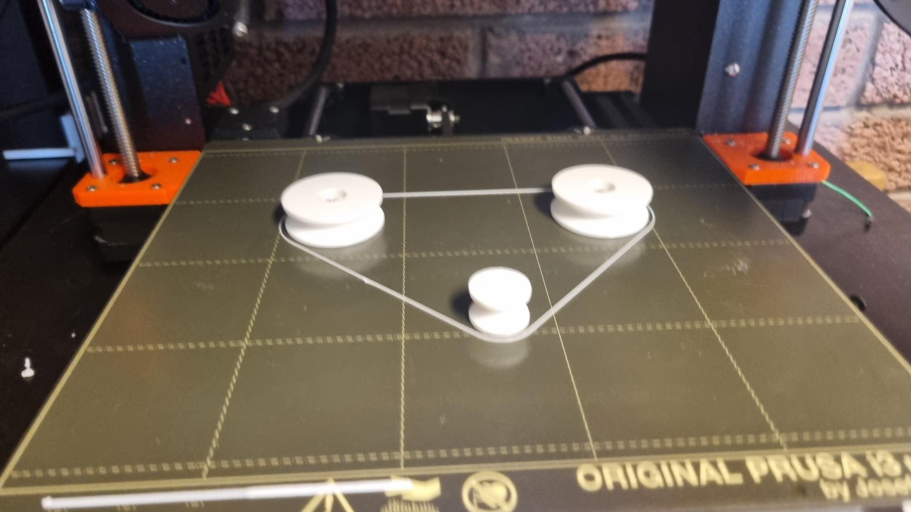

Okkar Dagb칩k
(Feb 24) N치칧um m칩tori til a칧 virka
료nn febr칰ar 24 hittumst vi칧 fyrst og byrju칧um 치 a칧 reyna a칧 l치ta m칩tor virka, vi칧 n치칧um a칧 stj칩rna m칩torinnum vel 치n vandam치ls. 료칧 var safna칧 hlutum til eins og lj칩sskynjara.

(Feb 25) T칬lva bjarka ey칧inlag칧ist
룐gar vi칧 komumst saman febr칰ar 25 칝tlu칧um vi칧 a칧 byrja 치 a칧 teikna upp v칠lmenni 칤 fusion 360. En 쬰gar Bjarki kveikti 치 t칬lvunni sinni gaus upp reyklykt. hann n치칧i 칤 skr칰j치rn til a칧 opna t칬lvuna og 쮂 kom 칤 lj칩s a칧 skr칰fa var laus 칤 t칬lvunni og haf칧i settst milli m칩칧urbor칧s og rafhl칬칧u, sem var칧 til 쬰ss a칧 skammhleypti 칤 t칬lvunni, og h칰n ey칧inlag칧ist. Hann 쬿rfti a칧 fara heim til a칧 reyna a칧 bjarga t칬lvunni, en h칰n a칧 lokum d칝md 칩n칳t.


(Feb 26) Discord
Daginn eftir a칧 t칬lva Bjarka ey칧inlag칧ist, keypti hann n칳ja t칬lvu og vi칧 t칬lu칧um saman 치 discord 치 me칧an hann downloada칧i fusion 360 og 칬칧rum forritum. 료칧 var teikna칧 sm치 pr칩type fyrir r칩bot sem var ger칧ur til a칧 s칳na hugmynd um hvernig r칩botinn g칝ti liti칧 칰t. 츼kve칧i칧 var a칧 notast vi칧 beltadrifi칧 'linear actuator' form fyrir hreyfingu, a칧allega vegna 치rei칧anleikasj칩narmi칧a.
(Feb 27) Haldi칧 치fram me칧 teikningu
룐nnan dag h칠ltum vi칧 치fram me칧 a칧 teikna upp 칤 fusion 360.
(Feb 28) Haldi칧 en 쮂 치fram me칧 teikningu 칤 fusion
Vi칧 hittumst 칤 VR-III og haldi칧 var 치fram me칧 teikninguna heima, h칰n er a칧 ver칧a tilb칰in (vonandi eru engar villur).
(Mars 6) 3D prenntun
H칠r f칩r Halld칩r 칤 VR-III til a칧 prenta 칰t rj칰 trisuhj칩l sem ver칧a notu칧 til a칧 hreyfa skei칧ina og reyna a칧 f치 viftu. 츼 endanum 쬿rfti a칧 teikna viftu 칤 fusion 360 og svo 3D prenta seinna. Hafist var handa vi칧 vinnu 치 keyrsluforriti

(Mars 7) Viftuger칧
룐nnan dag var vifta prenntu칧, til a칧 g칝ta 쬰ss a칧 nota ekki miki칧 efni 쮂 var prufa칧 a칧 prenta l칤tinn part af viftunni fyrst, sem h칝gt var a칧 m치ta 치 m칩torinn.

료칧 kom ekki upp miki칧 vandam치l me칧 prufuna en 쭀칤 mi칧ur 쬿rfti a칧 prenta 칰t 2 viftur 쭀칤 fyrsta passa칧i ekki inn 칤, 쮂 쬬칧 hafi virka칧 칤 prufunni.

료칧 var einnig 3D prentu칧 leiguh칰s.
(Mars 8) Fr칝sing vi칧ar
츼 쬰ssum degi eru flest allar teikningar okkar tilb칰nar og vi칧 byrjum a칧 fr칝sa og prenta 칰t allt sem vi칧 쬿rfum. 료r gekk frekkar vel en okkur vanta칧i en 쮂 nokkra lokahluti eins og f칝tur til a칧 halda uppi s칰pu r칩b칩tanum.

(Mars 9) Lagf칝rsla fr칝singar
츼 쬰ssum degi var laga칧 vandam치l sem komu upp 칤 fyrri dagi 칤 fr칝singunni 쬬r sem vi칧 쬿rftum a칧 f칝ra sta칧setningar 치 m칩torum um. H칠r var einnig byrja칧 치 a칧 setja upp vefs칤칧u sem g칝ti haldi칧 upp 칬llum skilyr칧um verkefnisins en 쬬칧 fannst engin, prufa칧 var t.d WordPress.
(Mars 10)
H칠r var almennilega byrja칧 치 a칧 setja upp vefs칤칧u en 쬬칧 voru nokkur vandam치l me칧 valm칬guleika 치 쬰im. 츼 endanum var gert vefs칤칧u me칧 github 쭀칤 vi칧 h칬fu칧um fari칧 칤 치fanga sem kenndi hvernig 치 a칧 setja upp github vefs칤칧u. Vefs칤칧an var set upp 쬬r sem twitch og OBS er nota칧 fyrir live myndbandi칧 og 쬬칧 er einnig password 치 dagb칩kinni til a칧 g칝ta 쬰ss a칧 h칰n er loku칧 fyrir almenning. Til 쬰ss a칧 koma 칤 veg fyrir a칧 쬿rfa a칧 stilla arminn upp 치 n칳tt var 치kve칧i칧 a칧 notast vi칧 limit rofa, sem segja arminum hven칝r hann er kominn aftur 칤 n칰llst칬칧u.
(Mars 11) Lokahlaup
Yfir n칩tt var reynt a칧 kl치ra verkefni칧, 쬬r sem allir partar voru tilb칰nir var eina sem 쬿rfti a칧 gera var a칧 g칝ta 쬰ss a칧 m칩torarnir myndu keyra allt vel og a칧 vi칧n치mi칧 myndi ekki ey칧ileggja t칬lvuna. Yfir h칬fu칧 var allt 칤 lagi me칧 r칩botan en 쬬칧 var samt vandam치l me칧 hitamyndun. Einnig gekk r칩botinn mj칬g h칝gt, 쬬r sem afl m칩tora haf칧i veri칧 vanmeti칧, og 쬬r af lei칧andi var notast vi칧 ni칧urg칤run fyrir auki칧 tog, sem reyndist a칧 lokum 칩쬬rft. Tilraunir til a칧 h칝kka hra칧a 치 m칩tor endu칧u me칧 쭀칤 a칧 칬칧rum m칩tornum var ofgert, og um kl 06:00 ofhitna칧i m칩tor, sem var칧 til 쬰ss trissuhj칩l skekktist vegna hitans. N칳tt hj칩l var sett 칤 prentun 치 me칧an kennararnir g치fu 칬칧rum nemendum einkunnir.

(Mars 12) Lagf칝ring
Vegna vandam치ls me칧 hitamyndun mars 11 br치칧na칧i einn biti og vi칧 쬿rftum a칧 endurprennta hann, vi칧 ger칧um 쬬칧 me칧 meiri 쭃kkt til a칧 koma 칤 veg fyrir frekari br치칧nun. Til a칧 draga 칰r keyslut칤ma var ger칧 breyting 치 keyrsluforriti, 쬬r sem b치칧ir m칩torar fyrir arma voru keyr칧ir samt칤mis.
(Mars 13) Endurteki칧 fall
츼 Fimmtudegi var fari칧 치 a칧ra s칳ningu 치 r칩botnum, sem enda칧i aftur me칧 칩sk칬pum 쬰gar m칩torarnir fyrir armanna byrju칧u a칧 hiksta 칤 upphafi keyrslu. 뤢 f칠kkst frekari frestur fram 치 m치nudag, svo h칝gt v칝ri a칧 lagf칝ra vandam치li칧 sem kom upp. 츼st칝칧an reyndist vera innsl치ttarvilla 칤 k칩칧a, en st칳ringin sem var notu칧 fyrir r칩botinn var RaspberyPi, keyr칧 칤 gegnum ssh me칧 VNC remote desktop kerfi. 뤢 haf칧i k칩칧ab칰tur fyrir limit rofa veri칧 afrita칧ur handvirkt af RPi t칬lvunni yfir 치 fart칬lvu, sem var칧 til 쬰ss a칧 kerfi칧 las af limit rofum 200 sinnum oftar en 쬬칧 치tti a칧 gera. S치 k칩칧ab칰tur enda칧i svo aftur 치 RaspberyPi t칬lvunni me칧 lokauppf칝rslu 치 k칩칧anum, sem 치tti bara a칧 breyta 쭀칤 칤 hva칧a st칬칧u armarnir 치ttu a칧 fara.
(Mars 14)
Villa 칤 k칩칧a fundin, og lagf칝r칧
(Mars 15)
R칩b칩tinn var aftur fluttur ni칧ur 칤 VR-III, og 치칝tla칧 var a칧 setja hann upp fyrir m치nudag. Upp kom sm치 vandam치l me칧 a칧 nettengja RPi t칬lvuna, og eftir margra klukkut칤ma vinnu vi칧 a칧 reyna a칧 koma nettengingu 칤 lag, kom 칤 lj칩s a칧 t칬lvan haf칧i or칧i칧 fyrir skemmdum 칤 flutningunum. Strax var hafist handa vi칧 a칧 porta k칩칧ann yfir 칤 C++, og a칧 breyta rafmangstengingum, svo h칝gt v칝ri a칧 keyra r칩b칩tann me칧 Arduino.
(Mars 16)
Skipting yfir 칤 Arduino var au칧veldari en vi칧 var b칰ist, og r칩b칩ti fluttur 칤 seinasta skipti 칤 VR-III. R칩b칩tinn var keyr칧ur 20-30 sinnum, til a칧 ganga 칰r skugga um a칧 engar villur k칝mu upp. 뤢 kom upp n칳tt vandam치l eftir keyrslurnar, en hristingur f칩r a칧 myndast 칤 kerfinu eftir mikla notkun, og 치kve칧i칧 var a칧 draga 칬rl칤ti칧 칰r hra칧anum. A칧 lokum var gengi칧 fr치 r칩botnum, svo hann v칝ri tilb칰inn til s칳ningar 치 M치nudegi.
(Mars 17)
M칝tt var ni칧r칤 sk칩la til a칧 s칳na r칩b칩tann. S칳ningin t칩kst nokku칧 vel, en v칤bringurinn var 쮂 or칧inn 쬬칧 mikill, meira a칧 segja 치 l치gum hra칧a, a칧 meirihluti s칰punnar enda칧i 치 g칩lfinu. Seinna um daginn var r칩botinn svo tekinn 칤 sundur, og 치st칝칧a fyrir v칤bringnum fundin, en tonnatak sem var nota칧 til a칧 halda r칩 fyrir Y-치s 칤 r칩h칰si haf칧i br치칧na칧 (enda mj칬g n치l칝gt m칩tornum sem haf칧i olli칧 칬llum hitavandam치lunum), og l칤mi칧 haf칧i sest 칤 gengjurnar 치 r칩nni. 료칧 var칧 til 쬰ss a칧 sveiflukennt 치lag mynda칧ist 치 drifkerfi칧, sem olli miklum titringi.